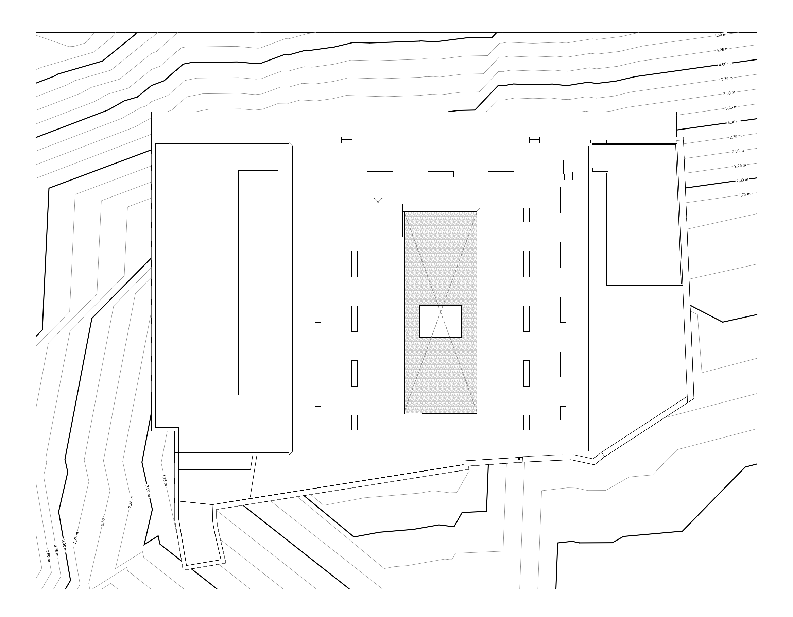
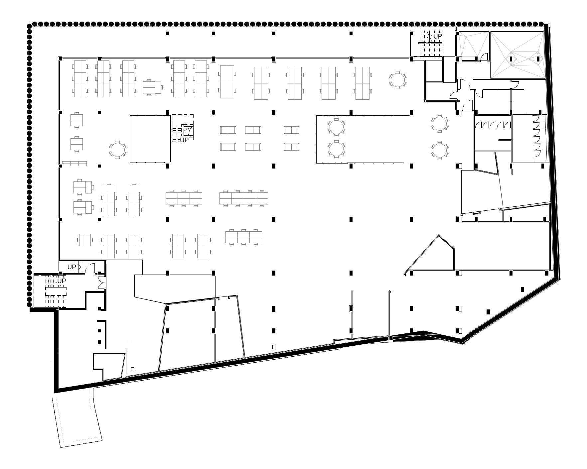
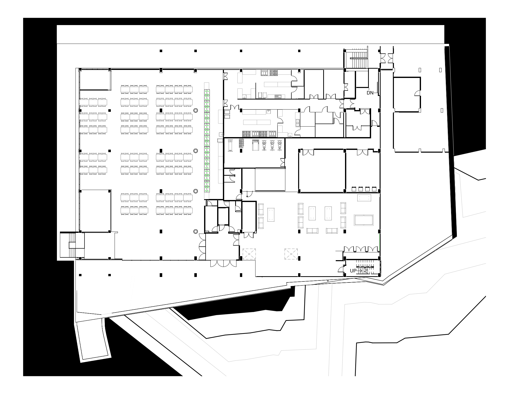

Concepto Principal
Rehabilitación del eje urbano principal conectando el centro histórico con el área metropolitana. Intervención que combina patrimonio existente con elementos contemporáneos.
Datos Técnicos
- Cliente: Ayuntamiento de Tirana
- Superficie: 12,500 m²
- Año: 2022-2023
- Equipo: 8 profesionales
- Presupuesto: €4.2M
Galería del Proyecto

Vista aérea de la intervención urbana

Detalle de pavimento y mobiliario urbano

Iluminación y uso nocturno del espacio
Desarrollo del Proyecto
Fase de Estudio
Análisis histórico del sitio | Documentación existente | Estudio de flujos peatonales
Propuesta Urbana
Diseño de pavimento unificado | Sistema de drenaje sostenible | Integración de vegetación
Ejecución
Coordinación BIM | Gestión de contratas | Control de calidad in situ